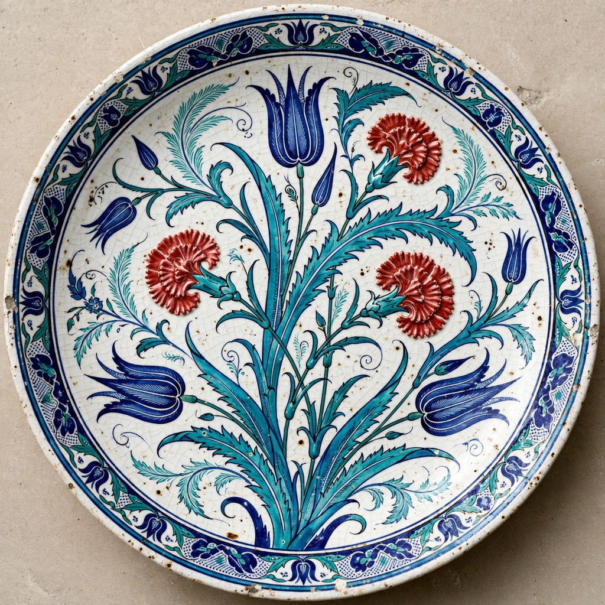

Iznik pottery, named after the town of İznik in western Anatolia, is a decorated ceramic produced from the late 15th century to the end of the 17th century for the Ottoman court and elite. Made of a white fritware body under a transparent lead glaze, it is celebrated for its brilliant palette — cobalt blue, turquoise, sage green, and after about 1550 a distinctive raised sealing-wax red — and for designs of flowers, arabesques, and Chinese-inspired motifs.
Early İznik ware (c. 1480–1520) imitated Chinese blue-and-white porcelain, which the Ottoman sultans collected avidly. Around 1520 potters introduced turquoise and finer brushwork; by the 1540s and 1550s, under court designers of the nakkaşhane such as Kara Memi, a naturalistic floral style flourished with tulips, carnations, hyacinths, and serrated saz leaves.
Vast quantities of İznik tiles clad imperial buildings in Istanbul and beyond — the Rüstem Pasha Mosque (1563) carries one of the richest tile revetments, and tiles were integral to the decoration of the Selimiye Mosque in Edirne. Court demand, quality control of designs sent from Istanbul, and the strain of huge commissions eventually weakened the industry; production declined through the 17th century and kilns shifted to Kütahya. İznik ware was prized in Europe, mounted by Renaissance goldsmiths, and copied in the 19th century by potters in France and Britain.